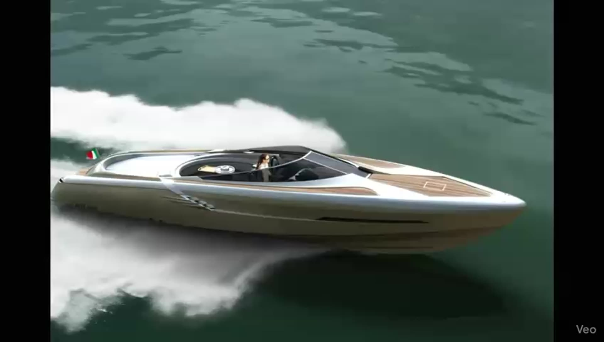
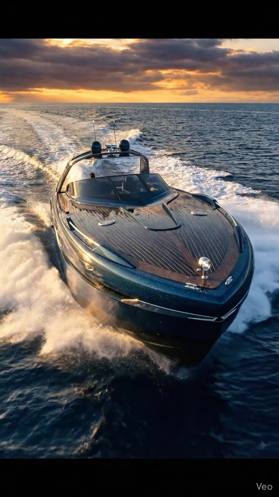
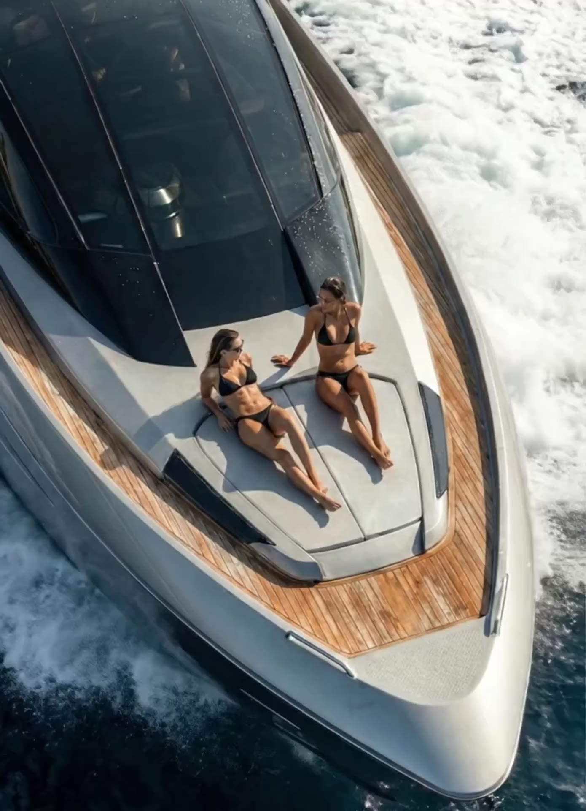
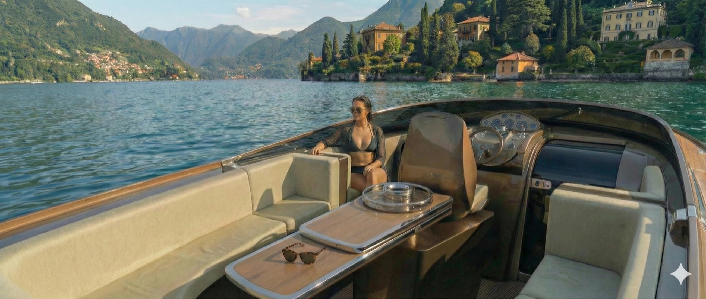
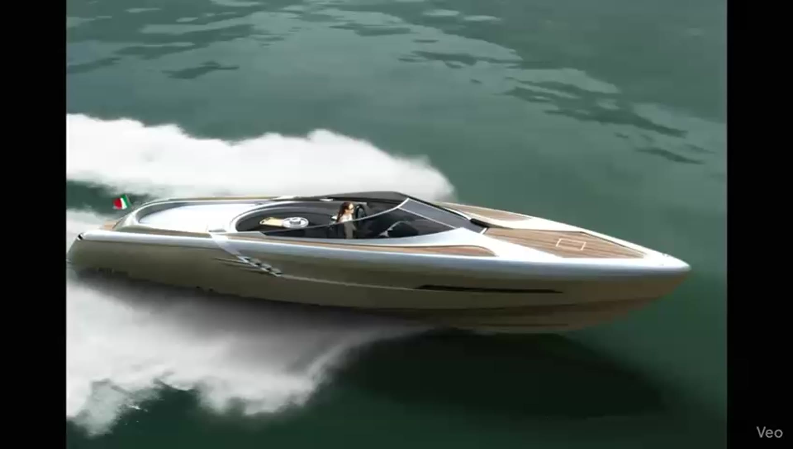
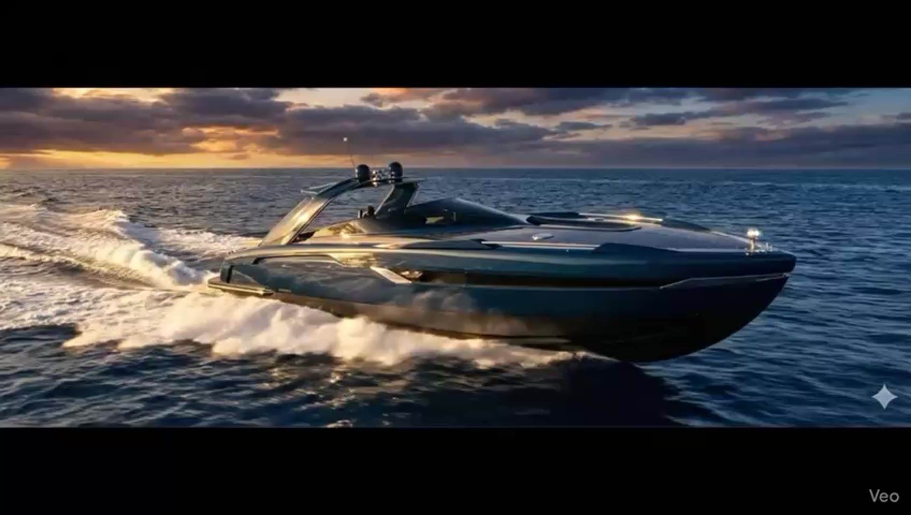
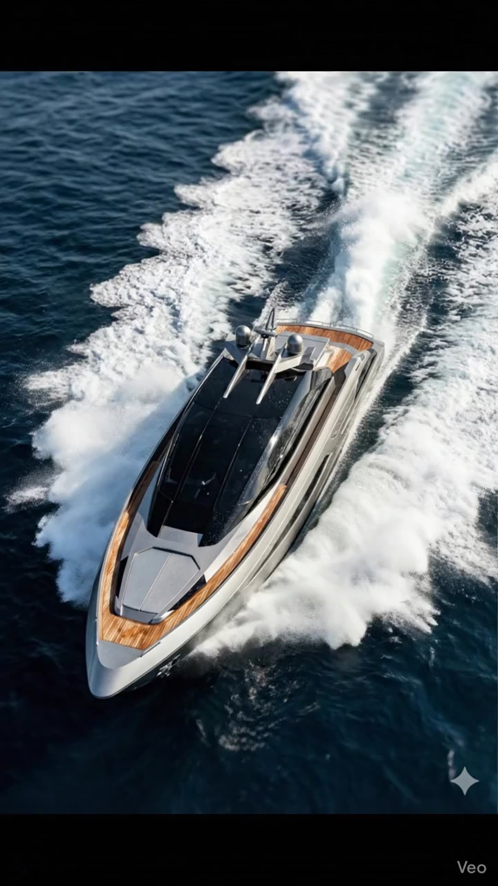

VELLARIO · COMO / Stile Italiano
THE ART OF DOLCEVITA
COMO
A distinctly Italian expression of design, elegance and the pleasure of life on the water.
VELLARIO · COMO / 01
Collezione
Eight boats, eight distinct characters. Different expressions of life on the water.
Distinctive by Design
Otto barche, otto caratteri. Un'unica interpretazione della Dolce Vita sull’acqua.
ESPLORA CollezioneLEGGI TUTTO
A collection should never feel like a row of interchangeable objects. Quantum 999, MAS 36, MAS 52, MAS 56, Lariocab, FY70, GranTender 72 and Gran Marlin explore different expressions of life on the water, from the spirit of the Italian sporting boat to the architectural ambition of a larger yacht. Each begins with its own design character.
 LA COLLEZIONE 01 / 08Quantum 999Una Linea. Un Carattere.
LA COLLEZIONE 01 / 08Quantum 999Una Linea. Un Carattere.
LA COLLEZIONE 02 / 08MAS 36Lo Spirito del Gran Turismo. LA COLLEZIONE 03 / 08MAS 52Eleganza in Movimento.
LA COLLEZIONE 03 / 08MAS 52Eleganza in Movimento.
LA COLLEZIONE 04 / 08MAS 56La Forza dell'Equilibrio. LA COLLEZIONE 05 / 08LariocabL'Essenza del Lago.
LA COLLEZIONE 05 / 08LariocabL'Essenza del Lago.
LA COLLEZIONE 06 / 08FY70Lo Stile Senza Compromessi. LA COLLEZIONE 07 / 08GranTender 72Presenza. Movimento. Libertà.
LA COLLEZIONE 07 / 08GranTender 72Presenza. Movimento. Libertà. LA COLLEZIONE 08 / 08Gran MarlinL'Anima del Mare Aperto.
LA COLLEZIONE 08 / 08Gran MarlinL'Anima del Mare Aperto.



Il patrimonio del Lario
Heritage
The boating heritage of Lake Como. A tradition to honour, not a company history to claim.
Le barche e i maestri del Lago di Como ispirano una nuova espressione dell’eleganza nautica italiana.
SCOPRI Heritage

Como · L'arte di vivere
Como e la Dolcevita
The lake, its villas and the effortless pleasure of living beautifully.
Un aperitivo sul lago, la luce del tramonto, il piacere di navigare senza fretta. Questa è la Dolce Vita.
SCOPRI Como e la Dolcevita
Il saper fare italiano
Artisanship and Love for Details
Proportion, materials and that unmistakable love for every detail.
Proporzioni, materiali, linee e superfici: il saper fare italiano si riconosce nei dettagli.
SCOPRI Artisanship and Love for Details
Una nuova idea di nautica italiana
Casa VELLARIO
A design-led vision, from Lake Como to the world.
Una nuova casa del design nautico italiano, con uno stile riconoscibile e un’esperienza profondamente personale.
SCOPRI Casa VELLARIO
Il piacere di conoscersi
Contacts
A discreet introduction to the world of VELLARIO.
Il piacere di conoscersi e di progettare insieme una barca davvero personale, in pieno stile italiano.
SCOPRI Contacts